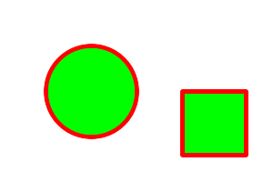

GraphicsMagick
GraphicsMagick
GraphicsMagick
GraphicsMagick
Drawable provides a convenient interface for preparing vector, image, or text arguments for the Image::draw() method. Each instance of a Drawable sub-class represents a single drawable object. Drawable objects may be drawn "one-by-one" via multiple invocations of the Image draw() method, or may be drawn "all-at-once" by passing a list of Drawable objects to the Image draw() method. The one-by-one approach is convenient for simple drawings, while the list-based approach is appropriate for drawings which require more sophistication.
The following is an example using the Drawable subclasses with a one-by-one approach to draw the following figure:

#include <string>
#include <iostream>
#include <Magick++.h>
using namespace std;
using namespace Magick;
int main(int /*argc*/,char **argv)
{
try {
InitializeMagick(*argv);
// Create base image (white image of 300 by 200 pixels)
Image image( Geometry(300,200), Color("white") );
// Set draw options
image.strokeColor("red"); // Outline color
image.fillColor("green"); // Fill color
image.strokeWidth(5);
// Draw a circle
image.draw( DrawableCircle(100,100, 50,100) );
// Draw a rectangle
image.draw( DrawableRectangle(200,200, 270,170) );
// Display the result
image.display( );
}
catch( exception &error_ )
{
cout << "Caught exception: " << error_.what() << endl;
return 1;
}
return 0;
}
Since Drawable is an object it may be saved in an array or a list for later (perhaps repeated) use. The following example shows how to draw the same figure using the list-based approach:
#include <string>
#include <iostream>
#include <list>
#include <Magick++.h>
using namespace std;
using namespace Magick;
int main(int /*argc*/,char **/*argv*/)
{
try {
InitializeMagick(*argv);
// Create base image (white image of 300 by 200 pixels)
Image image( Geometry(300,200), Color("white") );
// Construct drawing list
std::list<Magick::Drawable> drawList;
// Add some drawing options to drawing list
drawList.push_back(DrawableStrokeColor("red")); // Outline color
drawList.push_back(DrawableStrokeWidth(5)); // Stroke width
drawList.push_back(DrawableFillColor("green")); // Fill color
// Add a Circle to drawing list
drawList.push_back(DrawableCircle(100,100, 50,100));
// Add a Rectangle to drawing list
drawList.push_back(DrawableRectangle(200,100, 270,170));
// Draw everything using completed drawing list
image.draw(drawList);
// Display the result
image.display( );
}
catch( exception &error_ )
{
cout << "Caught exception: " << error_.what() << endl;
return 1;
}
return 0;
}
Drawable depends on the simple Coordinate structure which represents a pair of x,y coodinates. The Coordinate structure is defined as follows:
class Coordinate
{
public:
// Default Constructor
Coordinate ( void );
// Constructor, setting first & second
Coordinate ( double x_, double y_ );
// Destructor
virtual ~Coordinate ();
// x coordinate member
void x ( double x_ );
double x ( void ) const;
// y coordinate member
void y ( double y_ );
double y ( void ) const;
};
Drawable classes represent objects to be drawn on the image.
Drawable classes
Specify a transformation matrix to adjust scaling, rotation, and translation (coordinate transformation) for subsequently drawn objects in the same or decendent drawing context. The sx_ & sy_ parameters represent the x & y scale factors, the rx_ & ry_ parameters represent the x & y rotation, and the tx_ & ty_ parameters represent the x & y translation:
DrawableAffine ( double sx_, double sy_,
double rx_, double ry_,
double tx_, double ty_ );
Specify a transformation matrix to adjust scaling, rotation, and translation (coordinate transformation) for subsequently drawn objects in the same or decendent drawing context. Initialized to unity (no effect) affine values. Use class methods (not currently documented but defined in the Drawable.h header file) to adjust individual parameters from their unity values:
DrawableAffine ( void );
Draw an arc using the stroke color and based on the circle starting at coordinates startX_,`startY_`, and ending with coordinates endX_,`endY_`, and bounded by the rotational arc startDegrees_,`endDegrees_`:
DrawableArc ( double startX_, double startY_,
double endX_, double endY_,
double startDegrees_, double endDegrees_ );
Draw a bezier curve using the stroke color and based on the coordinates specified by the coordinates_ list:
DrawableBezier ( const CoordinateList &coordinates_ );
Select a drawing clip path matching id_:
DrawableClipPath ( const std::string &id_ );
Draw a circle using the stroke color and thickness using specified origin and perimeter coordinates. If a fill color is specified, then the object is filled:
DrawableCircle ( double originX_, double originY_,
double perimX_, double perimY_ )
Color image according to paintMethod. The point method recolors the target pixel. The replace method recolors any pixel that matches the color of the target pixel. Floodfill recolors any pixel that matches the color of the target pixel and is a neighbor, whereas filltoborder recolors any neighbor pixel that is not the border color. Finally, reset recolors all pixels:
DrawableColor ( double x_, double y_,
PaintMethod paintMethod_ )
Composite current image with contents of specified image, at specified coordinates. If the matte attribute is set to true, then the image composition will consider an alpha channel, or transparency, present in the image file so that non-opaque portions allow part (or all) of the composite image to show through:
DrawableCompositeImage ( double x_, double y_,
const std::string &filename_ );
DrawableCompositeImage ( double x_, double y_,
const Image &image_ );
Composite current image with contents of specified image, rendered with specified width and height, at specified coordinates. If the matte attribute is set to true, then the image composition will consider an alpha channel, or transparency, present in the image file so that non-opaque portions allow part (or all) of the composite image to show through. If the specified width or height is zero, then the image is composited at its natural size, without enlargement or reduction:
DrawableCompositeImage ( double x_, double y_,
double width_, double height_,
const std::string &filename_ );
DrawableCompositeImage ( double x_, double y_,
double width_, double height_,
const Image &image_ );
Composite current image with contents of specified image, rendered with specified width and height, using specified composition algorithm, at specified coordinates. If the matte attribute is set to true, then the image composition will consider an alpha channel, or transparency, present in the image file so that non-opaque portions allow part (or all) of the composite image to show through. If the specified width or height is zero, then the image is composited at its natural size, without enlargement or reduction:
DrawableCompositeImage ( double x_, double y_,
double width_, double height_,
const std::string &filename_,
CompositeOperator composition_ );
DrawableCompositeImage ( double x_, double y_,
double width_, double height_,
const Image &image_,
CompositeOperator composition_ );
Specify the pattern of dashes and gaps used to stroke paths. The strokeDashArray represents a zero-terminated array of numbers that specify the lengths of alternating dashes and gaps in pixels. If an odd number of values is provided, then the list of values is repeated to yield an even number of values. A typical strokeDashArray_ array might contain the members 5 3 2 0, where the zero value indicates the end of the pattern array:
DrawableDashArray( const double* dasharray_ );
Specify the distance into the dash pattern to start the dash. See documentation on SVG's stroke-dashoffset property for usage details:
DrawableDashOffset ( const double offset_ )
Draw an ellipse using the stroke color and thickness, specified origin, x & y radius, as well as specified start and end of arc in degrees. If a fill color is specified, then the object is filled:
DrawableEllipse ( double originX_, double originY_,
double radiusX_, double radiusY_,
double arcStart_, double arcEnd_ )
Specify the algorithm which is to be used to determine what parts of the canvas are included inside the shape. See documentation on SVG's fill-rule property for usage details:
DrawableFillRule ( const FillRule fillRule_ )
Specify opacity to use when drawing using fill color:
DrawableFillOpacity ( double opacity_ )
Specify font family, style, weight (one of the set { 100 | 200 | 300 | 400 | 500 | 600 | 700 | 800 | 900 } with 400 being the normal size), and stretch to be used to select the font used when drawing text. Wildcard matches may be applied to style via the AnyStyle enumeration, applied to weight if weight is zero, and applied to stretch via the AnyStretch enumeration:
DrawableFont ( const std::string &font_ );
DrawableFont ( const std::string &family_,
StyleType style_,
const unsigned long weight_,
StretchType stretch_ );
Draw a line using stroke color and thickness using starting and ending coordinates:
DrawableLine ( double startX_, double startY_,
double endX_, double endY_ )
Change the pixel matte value to transparent. The point method changes the matte value of the target pixel. The replace method changes the matte value of any pixel that matches the color of the target pixel. Floodfill changes the matte value of any pixel that matches the color of the target pixel and is a neighbor, whereas filltoborder changes the matte value of any neighbor pixel that is not the border color, Finally reset changes the matte value of all pixels:
DrawableMatte ( double x_, double y_,
PaintMethod paintMethod_ )
Specify miter limit. When two line segments meet at a sharp angle and miter joins have been specified for 'lineJoin', it is possible for the miter to extend far beyond the thickness of the line stroking the path. The miterLimit' imposes a limit on the ratio of the miter length to the 'lineWidth'. The default value of this parameter is 4:
DrawableMiterLimit ( unsigned int miterlimit_ )
Draw a point using stroke color and thickness at coordinate:
DrawablePoint ( double x_, double y_ )
Draw an arbitrary polygon using stroke color and thickness consisting of three or more coordinates contained in an STL list. If a fill color is specified, then the object is filled:
DrawablePolygon ( const CoordinateList &coordinates_ )
Draw an arbitrary polyline using stroke color and thickness consisting of three or more coordinates contained in an STL list. If a fill color is specified, then the object is filled:
DrawablePolyline ( const CoordinateList &coordinates_ )
Pop (terminate) clip path definition started by DrawablePushClipPath:
DrawablePopClipPath ( void )
Pop Graphic Context. Removing the current graphic context from the graphic context stack restores the options to the values they had prior to the preceding DrawablePushGraphicContext operation:
DrawablePopGraphicContext ( void )
Push (create) clip path definition with id_. Clip patch definition consists of subsequent drawing commands, terminated by DrawablePopClipPath:
DrawablePushClipPath ( const std::string &id_)
Push Graphic Context. When a graphic context is pushed, options set after the context is pushed (such as coordinate transformations, color settings, etc.) are saved to a new graphic context. This allows related options to be saved on a graphic context "stack" in order to support heirarchical nesting of options. When DrawablePopGraphicContext is used to pop the current graphic context, the options in effect during the last DrawablePushGraphicContext operation are restored:
DrawablePushGraphicContext ( void )
Start a pattern definition with arbitrary pattern name specified by id_, pattern offset specified by x_ and y_, and pattern size specified by width_ and height_. The pattern is defined within the coordinate system defined by the specified offset and size. Arbitrary drawing objects (including DrawableCompositeImage) may be specified between DrawablePushPattern and DrawablePopPattern in order to draw the pattern. Normally the pair DrawablePushGraphicContext & DrawablePopGraphicContext are used to enclose a pattern definition. Pattern definitions are terminated by a DrawablePopPattern object:
DrawablePushPattern ( const std::string &id_, long x_, long y_,
long width_, long height_ )
Terminate a pattern definition started via DrawablePushPattern:
DrawablePopPattern ( void )
Draw a rectangle using stroke color and thickness from upper-left coordinates to lower-right coordinates. If a fill color is specified, then the object is filled:
DrawableRectangle ( double upperLeftX_, double upperLeftY_,
double lowerRightX_, double lowerRightY_ )
Set rotation to use when drawing (coordinate transformation):
DrawableRotation ( double angle_ )
Draw a rounded rectangle using stroke color and thickness, with specified center coordinate, specified width and height, and specified corner width and height. If a fill color is specified, then the object is filled:
DrawableRoundRectangle ( double centerX_, double centerY_,
double width_, double hight_,
double cornerWidth_, double cornerHeight_ )
Apply scaling in x and y direction while drawing objects (coordinate transformation):
DrawableScaling ( double x_, double y_ )
Apply Skew in X direction (coordinate transformation):
DrawableSkewX ( double angle_ )
Antialias while drawing lines or object outlines:
DrawableStrokeAntialias ( bool flag_ )
Set color to use when drawing lines or object outlines:
DrawableStrokeColor ( const Color &color_ )
Specify the shape to be used at the end of open subpaths when they are stroked. Values of LineCap are UndefinedCap, ButtCap, RoundCap, and SquareCap:
DrawableStrokeLineCap ( LineCap linecap_ )
Specify the shape to be used at the corners of paths (or other vector shapes) when they are stroked. Values of LineJoin are UndefinedJoin, MiterJoin, RoundJoin, and BevelJoin:
DrawableStrokeLineJoin ( LineJoin linejoin_ )
Opacity to use when drawing lines or object outlines:
DrawableStrokeOpacity ( double opacity_ )
Set width to use when drawing lines or object outlines:
DrawableStrokeWidth ( double width_ )
Annotate image with text using stroke color, font, font pointsize, and box color (text background color), at specified coordinates. If text contains special format characters the image filename, type, width, height, or other image attributes may be incorporated in the text (see label()):
DrawableText ( const double x_, const double y_,
const std::string &text_ )
Annotate image with text represented with text encoding, using current stroke color, font, font pointsize, and box color (text background color), at specified coordinates. If text contains special format characters the image filename, type, width, height, or other image attributes may be incorporated in the text (see label()).
The text encoding specifies the code set to use for text annotations. The only character encoding which may be specified at this time is "UTF-8" for representing Unicode as a sequence of bytes. Specify an empty string to set text encoding to the system's default. Successful text annotation using Unicode may require fonts designed to support Unicode:
DrawableText ( const double x_, const double y_,
const std::string &text_, const std::string &encoding_)
Antialias while drawing text (default true). The main reason to disable text antialiasing is to avoid adding new colors to the image:
DrawableTextAntialias ( bool flag_ )
Specify decoration (e.g. UnderlineDecoration) to apply to text:
DrawableTextDecoration ( DecorationType decoration_ )
Draw a box under rendered text using the specified color:
DrawableTextUnderColor ( const Color &color_ )
Apply coordinate translation (set new coordinate origin):
DrawableTranslation ( double x_, double y_ )
Dimensions of the output viewbox. If the image is to be written to a vector format (e.g. MVG or SVG), then a DrawablePushGraphicContext object should be pushed to the head of the list, followed by a DrawableViewbox object to establish the output canvas size. A matching DrawablePopGraphicContext object should be pushed to the tail of the list:
DrawableViewbox(unsigned long x1_, unsigned long y1_,
unsigned long x2_, unsigned long y2_)
The vector paths supported by Magick++ are based on those supported by the SVG XML specification. Vector paths are not directly drawable, they must first be supplied as a constructor argument to the DrawablePath class in order to create a drawable object. The DrawablePath class effectively creates a drawable compound component which may be replayed as desired. If the drawable compound component consists only of vector path objects using relative coordinates then the object may be positioned on the image by preceding it with a DrawablePath which sets the current drawing coordinate. Alternatively coordinate transforms may be used to translate the origin in order to position the object, rotate it, skew it, or scale it.
Vector path commands
The "moveto" commands establish a new current point. The effect is as if the "pen" were lifted and moved to a new location. A path data segment must begin with either one of the "moveto" commands or one of the "arc" commands. Subsequent "moveto" commands (i.e., when the "moveto" is not the first command) represent the start of a new subpath.
Start a new sub-path at the given coordinate. PathMovetoAbs indicates that absolute coordinates will follow; PathMovetoRel indicates that relative coordinates will follow. If a relative moveto appears as the first element of the path, then it is treated as a pair of absolute coordinates. If a moveto is followed by multiple pairs of coordinates, the subsequent pairs are treated as implicit lineto commands.
Simple moveto:
PathMovetoAbs ( const Magick::Coordinate &coordinate_ )
Moveto followed by implicit linetos:
PathMovetoAbs ( const CoordinateList &coordinates_ )
Simple moveto:
PathMovetoRel ( const Magick::Coordinate &coordinate_ );
Moveto followed by implicit linetos:
PathMovetoRel ( const CoordinateList &coordinates_ );
The "closepath" command causes an automatic straight line to be drawn from the current point to the initial point of the current subpath.
Close the current subpath by drawing a straight line from the current point to current subpath's most recent starting point (usually, the most recent moveto point):
PathClosePath ( void )
The various "lineto" commands draw straight lines from the current point to a new point.
Draw a line from the current point to the given coordinate which becomes the new current point. PathLinetoAbs indicates that absolute coordinates are used. A number of coordinates pairs may be specified in a list to draw a polyline. At the end of the command, the new current point is set to the final set of coordinates provided.
Draw to a single point:
PathLinetoAbs ( const Magick::Coordinate& coordinate_ );
Draw to multiple points:
PathLinetoAbs ( const CoordinateList &coordinates_ );
Draw a line from the current point to the given coordinate which becomes the new current point. PathLinetoRel indicates that relative coordinates are used. A number of coordinates pairs may be specified in a list to draw a polyline. At the end of the command, the new current point is set to the final set of coordinates provided.
Draw to a single point:
PathLinetoRel ( const Magick::Coordinate& coordinate_ );
Draw to multiple points:
PathLinetoRel ( const CoordinateList &coordinates_ );
Draws a horizontal line from the current point (cpx, cpy) to (x, cpy). PathLinetoHorizontalAbs indicates that absolute coordinates are supplied. At the end of the command, the new current point becomes (x, cpy) for the final value of x:
PathLinetoHorizontalAbs ( double x_ )
Draws a horizontal line from the current point (cpx, cpy) to (x, cpy). PathLinetoHorizontalRel indicates that relative coordinates are supplied. At the end of the command, the new current point becomes (x, cpy) for the final value of x:
PathLinetoHorizontalRel ( double x_ )
Draws a vertical line from the current point (cpx, cpy) to (cpx, y). PathLinetoVerticalAbs indicates that absolute coordinates are supplied. At the end of the command, the new current point becomes (cpx, y) for the final value of y:
PathLinetoVerticalAbs ( double y_ )
Draws a vertical line from the current point (cpx, cpy) to (cpx, y). PathLinetoVerticalRel indicates that relative coordinates are supplied. At the end of the command, the new current point becomes (cpx, y) for the final value of y:
PathLinetoVerticalRel ( double y_ )
These three groups of commands draw curves:
Cubic Bézier commands.
A cubic Bézier segment is defined by a start point, an end point, and two control points.
Quadratic Bézier commands.
A quadratic Bézier segment is defined by a start point, an end point, and one control point.
Elliptical arc commands.
An elliptical arc segment draws a segment of an ellipse.
Curve Commands
Cubic Bézier curve commands
The cubic Bézier commands depend on the PathCurvetoArgs argument class, which has the constructor signature:
PathCurvetoArgs( double x1_, double y1_,
double x2_, double y2_,
double x_, double y_ );
PathCurveto:
Draws a cubic Bézier curve from the current point to (x,*y*) using (x1,*y1*) as the control point at the beginning of the curve and (x2,*y2*) as the control point at the end of the curve. PathCurvetoAbs indicates that absolutecoordinates will follow; PathCurvetoRel indicates that relative coordinates will follow. Multiple sets of coordinates may be specified to draw a polybezier. At the end of the command, the new current point becomes the final (x,*y*) coordinate pair used in the polybezier.
Draw a single curve:
PathCurvetoAbs ( const PathCurvetoArgs &args_ );
Draw multiple curves:
PathCurvetoAbs ( const PathCurveToArgsList &args_ );
Draw a single curve:
PathCurvetoRel ( const PathCurvetoArgs &args_ );
Draw multiple curves:
PathCurvetoRel ( const PathCurveToArgsList &args_ );
PathSmoothCurveto:
Draws a cubic Bézier curve from the current point to (x,y). The first control point is assumed to be the reflection of the second control point on the previous command relative to the current point. (If there is no previous command or if the previous command was not an PathCurvetoAbs, PathCurvetoRel, PathSmoothCurvetoAbs or PathSmoothCurvetoRel, assume the first control point is coincident with the current point.) (x2,y2) is the second control point (i.e., the control point at the end of the curve). PathSmoothCurvetoAbs indicates that absolute coordinates will follow; PathSmoothCurvetoRel indicates that relative coordinates will follow. Multiple sets of coordinates may be specified to draw a polybezier. At the end of the command, the new current point becomes the final (x,y) coordinate pair used in the polybezier.
Draw a single curve:
PathSmoothCurvetoAbs ( const Magick::Coordinate &coordinates_ );
Draw multiple curves
PathSmoothCurvetoAbs ( const CoordinateList &coordinates_ );
Draw a single curve:
PathSmoothCurvetoRel ( const Coordinate &coordinates_ );
Draw multiple curves:
PathSmoothCurvetoRel ( const CoordinateList &coordinates_ );
Quadratic Bézier curve commands
The quadratic Bézier commands depend on the PathQuadraticCurvetoArgs argument class, which has the constructor signature:
PathQuadraticCurvetoArgs( double x1_, double y1_,
double x_, double y_ );
Draw a single curve:
PathQuadraticCurvetoAbs ( const Magick::PathQuadraticCurvetoArgs &args_ );
Draw multiple curves:
PathQuadraticCurvetoAbs ( const PathQuadraticCurvetoArgsList &args_ );
Draw a single curve:
PathQuadraticCurvetoRel ( const Magick::PathQuadraticCurvetoArgs &args_ );
Draw multiple curves:
PathQuadraticCurvetoRel ( const PathQuadraticCurvetoArgsList &args_ );
Draw a single curve:
PathSmoothQuadraticCurvetoAbs ( const Magick::Coordinate &coordinate_ );
Draw multiple curves:
PathSmoothQuadraticCurvetoAbs ( const CoordinateList &coordinates_ );
Draw a single curve:
PathSmoothQuadraticCurvetoRel ( const Magick::Coordinate &coordinate_ );
Draw multiple curves:
PathSmoothQuadraticCurvetoRel ( const CoordinateList &coordinates_ );
Elliptical arc curve commands
The elliptical arc curve commands depend on the PathArcArgs argument class, which has the constructor signature:
PathArcArgs( double radiusX_, double radiusY_,
double xAxisRotation_, bool largeArcFlag_,
bool sweepFlag_, double x_, double y_ );
Draws an elliptical arc from the current point to (x, y). The size and orientation of the ellipse are defined by two radii (radiusX, radiusY) and an xAxisRotation, which indicates how the ellipse as a whole is rotated relative to the current coordinate system. The center (cx, cy) of the ellipse is calculated automatically to satisfy the constraints imposed by the other parameters. largeArcFlag and sweepFlag contribute to the automatic calculations and help determine how the arc is drawn. If largeArcFlag is true then draw the larger of the available arcs. If sweepFlag is true, then draw the arc matching a clock-wise rotation.
Draw a single arc segment:
PathArcAbs ( const PathArcArgs &coordinates_ );
Draw multiple arc segments:
PathArcAbs ( const PathArcArgsList &coordinates_ );
Draw a single arc segment:
PathArcRel ( const PathArcArgs &coordinates_ );
Draw multiple arc segments:
PathArcRel ( const PathArcArgsList &coordinates_ );
Copyright © Bob Friesenhahn 1999 - 2020